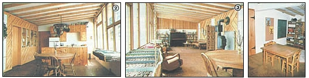

PHOTOS BY JOYCE WAGENIUS
[2] Looking east toward the kitchen end of the sunroom. [3] Notice the sunlight panels in the interior portion. [4] The bulletin board pops out of the utility room wall to provide an extra bedroom exit.